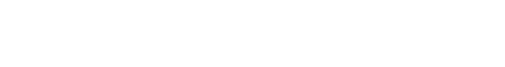

- [2015 May] International Conference and School on Structure, Tectonics and Earthquakes in the Alborz-Zagros-Makran Region (smr 2712) was held in Tehran, Iran. It was organised by ICTP, Geological Survey of Iran, and the Earthquakes Without Frontiers International Partnership Programme (NERC-ESRC). Hua Wang was invited to give a 3-hour lecture entitled “InSAR: methodology and applications in earthquake studies”on 28 May 2015.
- [2014 Nov] Carolina’s paper was published in JGR. The paper provided the first 3D velocity field inversion of InSAR and GPS of the entire Afar depression. The result shows that plate spreading in Afar is currently achieved in contrasting modes. A transient post-diking deformation is focused at the Dabbahu rift segment while in central Afar spreading is distributed over several overlapping segments, and southern Afar exhibits an inter-diking deformation pattern focused at the Asal-Ghoubbet segment.
- [2014 Aug] Isabelle’s paper was published in EPSL. The paper was the first on very long-term (about half a century) postseismic deformation in Tibet following both normal and strike-slip earthquakes. And the 1951 normal event is key to constrain the viscosity in the lower crust.
- [2014 Aug] Our paper on the normal faulting sequence occurred in the Pumqu-Xainza Rift was published in G-cubed. In this paper, we constrained the fault parameters using InSAR and teleseismic body-wave seismology, and calculated stress interactions from the fault models. We found that all the earthquakes occurred at moderate instead of low-angle normal faults.
- [2014 May] Carolina Pagli will visit the Guangdong University of Technology for 1.5 months since 8 May. She will study on the volcanic deformation of Changbaishan during her visit, and give two seminars on InSAR and tectonic/volcanic deformation.
- [2013 Dec] Tim’s paper was published in the special volume of Tectonophysics - 100 years of Moho. The volume is to celebrate the 100 anniversary of the publication of discontinuous boundary between Crust and Mantle (named Moho) discovered by Mohorovicic in 1910. In this paper, we compile and review the geodetic measurements associated with the earthquake cycle and test whether crustal thickness exerts any control.
- [2013 Oct] Matt’s paper was published in JGR - interseismic deformation throughout the whole Tibetan Plateau, the longest InSAR rate map all over the world. It’s a hard work by Matt over a few years during his Ph.D. study. Congratulations!
- [2012 Nov] Our paper about land subsidence in the Pearl River Delta was published in Geophys. J. Int. In the paper, we developed a novel algorithm to combine interferograms from multi-track; the result reveals an elongated zone of subsidence along the coast in Shenzhen.
- [2012 May] A new algorithm was developed to estimate InSAR rate and time series independent of tracks, satellites and acquisition modes. It has been embedded in the π-RATE software.
- [2012 Apr] Satellite geodetic imaging reveals internal deformation in western Tibet. The paper was published in GRL.